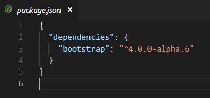
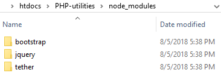
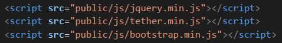

- ทำการ install node และ npm ในเครื่องให้เรียบร้อย
- ในโฟลเดอร์โปรเจค สร้างไฟล์ package.json สำหรับนำเข้า lib ต่างๆ
- ข้างในไฟล์ package.json ใส่ {}
- เปิด cmd และเข้าไปในโปรเจค
- lib ตัวแรกที่จะนำเข้ามาคือ bootstrap ให้เข้าไปที่ website ของ bootstrap เพื่อรัน npm install ตัวล่าสุด
- รันตัวล่าสุด (ซึ่งตอนนี้คือ bootstrap@4.0.0-alpha.6) npm install bootstrap@4.0.0-alpha.6 --save
- ในไฟล์ package.json ระบบจะเพิ่ม dependencies ของ bootstrap มาให้ ส่วนใน node_modules เพิ่ม jquery ที่เข้ากับ bootstrap
version นั้นเข้ามาให้ด้วย


- การเรียกใช้งาน libs ที่นำเข้ามา สามารถอ้างอิง path จาก node_modules หรือจะ copy ไฟล์ เข้ามาใช้ในโปรเจคก็ได้
- ลำดับการ include js version ปัจจุบัน (08/2018)

- นำเข้า libs อื่นๆ ที่จำเป็น ได้แก่
- font-awesome: npm i font-awesome --save